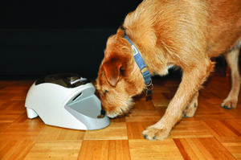
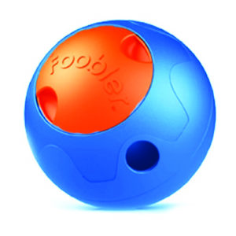
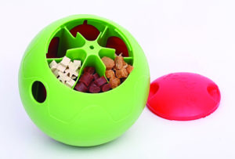

Preventing Food-Toy “Fails”
Toys that dispense food are often recommended (even by WDJ!) to help occupy a dog, preventing boredom and anxiety. Here's how to make sure the toy doesn't increase his distress
The Kong was the first chew-resistant toy on the market that was used to contain food in such a way that required the dog to really work to get it. Depending on the filling (kibble held in place with peanut better, cream cheese, or yogurt? canned food? baby food?) or whether it's been frozen or melted a microwave, it may take a dog a lot of licking, chewing, biting, and dropping the toy to get all the food. Or the dog might decide it's not worth the effort!
There is an ever-widening variety of food-filled puzzles, food-dispensing toys, and “slow feeding” dishes for dogs on the market. Many trainers (and this publication) frequently encourage owners to employ these tools to engage doggie brains and to help dogs occupy their time, especially when home alone. However, not all food-dispensing toys are suitable for all dogs! Some, in fact, might frustrate and annoy your dog – or ratchet up his anxiety. So let’s take a closer look at these tools, in order to help you find some that your dog will unequivocally enjoy.
Be prepared, however: I’m going to discuss some common problems with food toys through the lens of behavior science; it’s going to get mildly technical. But if you don’t want to waste your money on toys that gather dust or get thrown out because you didn’t realize that your dog needed your help to learn how to interact with them successfully, or because the toys had features that made them frustrating or scary to your dog, read on!
BUILDING TOY-PLAY SKILLS
The most common problem with food toys is that the dog doesn’t have the skills to get the food and the owner doesn’t understand how to teach him.
Many food toys come with no instructions for introducing them to the naïve dog. For instance, toys that have a cavity that can be filled with food, such as Kongs, are assumed by most consumers to be easy and fun for dogs to use. The marketing materials lead them to believe this, showing dogs chewing, licking, and batting around full toys to dislodge the food and even playing with empty ones. However, if the toy is initially presented at its most difficult level, which is often what’s shown in advertising and demo videos, many dogs can’t be successful.
The “recipes” found for these toys on the internet are often elaborate and challenging, with fillings solidified by melted cheese or freezing. Special biscuits can be purchased for some toys that can’t be shaken or rolled out and require the dog to crush the whole toy or saturate the food by licking before getting anything out.
When an owner presents a challenge like this to a new puppy, or even an inexperienced, well-fed, or timid adult dog, the animal will often sniff at the toy, perhaps poke it with its nose or lick it for a while, then give up. Then the owner may say, “Well, my dog doesn’t like food toys,” and also give up.
Let’s look at what behaviors a dog needs to succeed at using one of these toys. They might include licking, chewing, pushing with the nose, picking up, carrying, dropping, shaking, batting with the paws, or securing the toy with the paws while performing some of the other behaviors. These are normal dog behaviors, but that doesn’t mean that every dog will know how to use them in a given situation. With some more difficult toys, they must be performed in a certain order.
As when training any behavior, owners need to start dogs at a level at which they can easily succeed and experience extremely attractive consequences. The dogs should be able clearly to see, hear, and/or smell the food and get some of it right away. Cavity toys can be filled loosely with small, high-value treats, so that any movement by the dog is likely to immediately produce something the dog loves. The opening can be smeared with peanut butter or meat puree to encourage licking.
The difficulty can then be increased slowly as the dog refines the physical skills to extract the food.
IS THE TOY PUNISHING YOUR DOG?
There can be problems in this area as well, when the consequence of the behavior is either not reinforcing or, worse, scary.
A dog who is used to getting kibble for free in a bowl may not be motivated to dig slightly wetted and frozen kibble out of a toy. He may have the appropriate behavioral skills, but the consequence doesn’t merit the effort. This problem is relatively easy to prevent or fix: add some higher-value morsels and start off easier, as described above.
One problem that is not so easily remedied is when an unpleasant consequence comes instead of, or along with, the food. A hard plastic toy may bang against a wall, startling a sound-sensitive dog. (Fortunately, there are a few treat-delivery balls that are made of soft plastic.)
A toy with electronics may beep or ding or move in an unexpected way. If one of these stimuli precedes the delivery of the food, it is the most immediate consequence of the dog’s behavior. If it happens regularly, it may come to serve as a conditioned reinforcer, predicting the arrival of food (like a clicker does). Or, worst case, it may scare the dog so much that he doesn’t find the food worth the risk.
Dogs who are sensitive to noises may not recover from this. Some may attempt to get the food without so much motion, and their movements will become careful and inhibited. Some will refuse the toy altogether.
One of my dogs became extremely frightened of the noise that the Manners Minder (a.k.a. the Treat & Train), a remote-controlled treat dispenser, makes when it jams. She initially loved this device and using it actually added value to any treat that was inside. But while most of the time the consequence of her nice behavior was a treat (positive reinforcement), sometimes it was a horrible grinding noise that would cause her to back away wide-eyed and then refuse to return (positive punishment). I’ve stopped using this device with her until I can take the time to counter-condition her response to that noise.
Take care in selecting toys for sensitive dogs, and experiment with them before giving them to the dog.
CONFLICTING CUES
Here’s the technical part. Remember that the smallest units of behavior we can analyze are antecedents (stimuli, events, or parts of the animal’s history that set the stage for a behavior), behaviors (anything animals do that can be measured), and consequences (stimuli or events that immediately follow a behavior and influence its future strength).
Behaviors and consequences are often easy to observe, but antecedents can be more subtle. One type of antecedent is a cue: a stimulus or condition that communicates to the animal that certain behaviors will be reinforced (or punished). Some toys accidentally present cues that are not in keeping with how they are designed to be used.
For most food toys, the cue that food-seeking behaviors will be reinforced is the presentation of a loaded toy. As the dog interacts with a kibble toy, the sound of the kibble inside the toy becomes a cue as well. Or rather a series of them: The sound of a lot of kibble rattling inside the toy correlates with kibble being delivered more frequently; it predicts a high rate of reinforcement.
The Manners Minder (also sold under the name Treat & Train) was among the first remote-controlled treat-dispensing devices on the market. It enables a handler to deliver treats to a dog at a location that is up to 100 feet away – perfect for certain training applications. However, some dogs are afraid of the devices.
As the toy empties, the sound changes, predicting a thinner reinforcement schedule. A similar process occurs with the odor of the food in the toy. When the toy is empty, no kibble is audible and we can assume the kibble odor is greatly diminished. These are cues that tell the dog that reinforcement is not available. The dog learns to stop food seeking.
But we get problems with toys that give confusing signals about when or whether the food is available.
One such toy, the Foobler, is a hard plastic ball that ejects treats when rolled. It contains six rotating food compartments and a timer. One compartment at a time is in a position to release food, and then when the timer goes off, the next compartment rotates into position. The owner can set the timer to control how frequently the compartments rotate; the interval can be as short as 15 minutes and as long as 90. Before the compartments rotate, a bell rings to signify that pushing the toy will now pay off.
However, when a compartment empties, the sound of rattling kibble is still present, even though food will not be available until after the next bell. The dog can still smell the food in the toy. With every other food toy an experienced dog has played with, these are cues to continue pushing. There is no cue to let the dog know that the food is now unavailable and that ball pushing will not be reinforced. And because the pushing has been reinforced on an intermittent schedule – meaning sometimes it took one push to eject food, sometimes a few – both with other toys and with this one, the dog will probably persist for some time.
What’s more, when the dog finally perceives that the previously reinforced behavior is no longer working, he may start to go through extinction. Extinction can be an unpleasant process, and its common side effects include frustration and an increase in the variability of behavior. The former we try to avoid when training; the latter is something we can plan for and use when shaping behavior – but that is a procedure that requires careful adjustment of criteria and observation of the dog, and should not be left up to a plastic toy.
Among other reasons, it could be dangerous to the toy. I introduced three dogs to the Foobler. My smallest dog switched to gnawing on it when the active food compartment emptied, and even she was able to do damage. (Another dog decided immediately that the most efficient behavior was to chew the toy apart to get all the food at once. Although she’s only medium-size herself, she could have dismembered the toy had I not been there to remove it.) These are natural responses from dogs who have learned through reinforcement of many varied behaviors that their goal with a food toy is to do whatever it takes to get all the food out.
The Foobler
So you’ll need to supervise your dog closely to prevent behaviors that are damaging to the Foobler, which makes it less than ideal for one of its intended purposes: spreading food-toy engagement out over the course of a workday for dogs left home alone.
You’ll also want to teach your dog how to use it. A training plan would include teaching the dog that the bell means food is available, and – a more complex task – that when the food stops coming out of the toy, he should wait, for up to 15 minutes, until the bell rings again. Although there is no “training mode” for the toy, you can turn it on and off manually to temporarily shorten the intervals between the opening of compartments and build the association of the bell with food delivery.
Such a plan could address possible frustration with the toy’s reinforcement schedule, but could not be relied upon to prevent a dedicated chewer from taking matters into his own mouth during your absence. We would do well to provide a different toy to dogs who have the ability and inclination to chew hard plastic.
The Pet Tutor is a food- or treat-dispensing tool used by many trainers. A canister holds a supply of treats, which can be dispensed via a remote control for delivering treats to a dog at a distance from the handler, or via a timer. The product’s marketing materials suggest that the timed-delivery of food can be a helpful distraction for dogs who suffer from separation anxiety or isolation distress. And it might – for some dogs. Other dogs may experience the tool in much the same manner as the Foobler: frustrating because they can still see and smell the food inside the product.
Pet Tutor
Generally, when used to dispense food to a dog who is home alone, the Pet Tutor is either placed on top of a crated dog’s wire crate or on the door of a plastic crate (so it dispenses into the crate), or up on a counter (so the dispensed food falls onto the floor).
The product is designed to resist the explorations of a dog who gets ahold of it somehow, but it won’t hold up to all-day safe-cracking efforts or attention from a really strong chewer. But even if a dog can’t get at it, they can still smell that it’s full of food. For some dogs, that’s not a big deal; for an anxious, food-obsessed dog, this likely wouldn’t be a useful tool in this application.
TOYS REQUIRE SKILLS, TRAINING, SUPERVISION
We need to be careful consumers when we select toys for our dogs. We need to provide toys that are safe and fun for each individual dog, and at times, we also may need to train the dog to use them. We need to watch for fear or undue frustration. For the dog’s safety, we need to closely observe his interactions with a toy before leaving him alone with it.
And finally, we may need to take time to teach even an experienced dog about a toy with a rule structure different from the one to which they are accustomed.
Portions of this article were first published in BARKS from the Guild, Pet Professional Guild’s official publication (10/2014).
Writer : Eileen Anderson